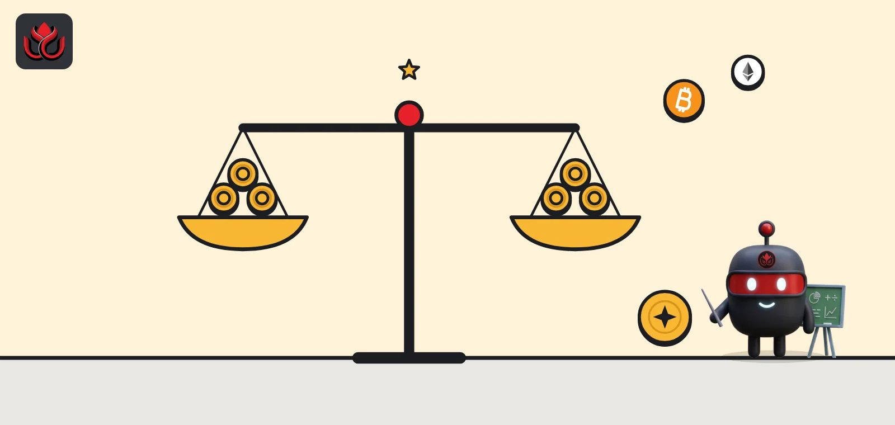
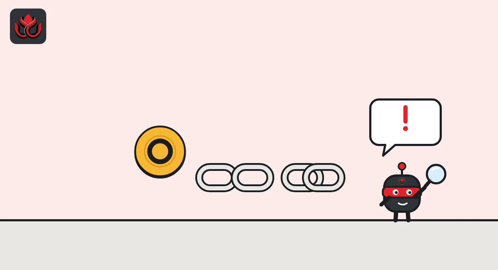

Stablecoins explained: USDT vs. USDC, the two coins that hold 87% of the market
Stablecoins are tokens built to stay worth $1, backed by reserves such as cash and short-term US government debt. As of November 2, 2026, Tether's USDT ($178.48 billion) and Circle's USDC ($70.68 billion) made up about 87% of a $285.89 billion market, per rwa.xyz.

Key points
- A stablecoin is a token that aims to stay at $1, usually because the issuer holds $1 of reserves for each token.
- As of November 2, 2026, USDT was $178.48 billion and USDC $70.68 billion, per rwa.xyz. Both shrank about 3% in 30 days.
- USDT is issued by Tether Holdings, domiciled in El Salvador, and lives mostly on TRON and Ethereum. USDC is issued by Circle and lives mostly on Ethereum.
- Circle says USDC reserves sit mostly in a government money market fund, disclosed weekly with monthly Big Four assurance.
What DeepSea's data shows
The freeze power described above was used at scale in October. After the Binance breach, DeepSea reports that issuers froze more than 1.5 billion USDT, about 800 million USDC, 40.5 million RLUSD and 27.8 million USD1, much of it within about 40 minutes.
Attackers know this and dump stablecoins fast. DeepSea says about 700 million USDT moved before it could be blacklisted, and around 325 million USDT was swapped into about 122,300 ETH at a price well above the market, a loss the attacker accepted to hold an asset nobody can freeze.
Data: DeepSea (desea.io), checked November 2, 2026, 7:59 a.m. ET.
What is a stablecoin?
A stablecoin is a crypto token built to hold a steady price, almost always $1. The most common type is fiat-backed: a company issues one token for each dollar it receives and holds that dollar, or something close to it, in reserve. When a customer redeems a token, the company pays out a dollar and destroys the token.
People use stablecoins to trade crypto without going back to a bank, to send dollars across borders at any hour, to store savings in dollars in countries with weak currencies and, increasingly, for payments between apps and AI agents.
How does a stablecoin keep its $1 price?
Through creation and redemption. Approved customers can send dollars to the issuer and get new tokens, or return tokens and get dollars back. If the market price drops to 99 cents, a customer who can redeem has a reason to buy cheap tokens and cash them in for $1, which pushes the price back up. If the price rises above $1, the same customers can create new tokens and sell them. That only works if people trust the reserves are really there and redemptions keep working.
How big are USDT and USDC?
As of November 2, 2026, data site rwa.xyz tracked 123 stablecoins worth $285.89 billion, down 3.06% in 30 days, held by 304.85 million addresses. USDT and USDC together made up about 87% of that.
Below the top two, the field is crowded but small. On the same date rwa.xyz listed USDS (Sky) at $6.39 billion, USDe (Ethena) at $4.53 billion, DAI at $4.52 billion, USD1 at $3.87 billion, PYUSD (Paxos) at $2.72 billion and Ripple's RLUSD at $2.36 billion. Falcon Finance's USDf and Paxos's USDG were each under $2 billion. No coin outside the top two held even 3% of the market.
Largest stablecoins by market value, November 2, 2026
US$ billion
Source: rwa.xyz, Stablecoins, read November 2, 2026.
USDT vs. USDC: what's the difference?
USDT (Tether). The rwa.xyz USDT page lists the issuer as Tether Holdings, domiciled in El Salvador. As of November 2, 2026, USDT was worth $178.48 billion, down 2.58% in 30 days, with 234.3 million holders. Most of it sits on TRON (about 93.9 billion tokens) and Ethereum (about 88.3 billion), followed by BNB Chain (about 9.2 billion) and Solana (about 3.8 billion). rwa.xyz lists USDT's regulatory framework as El Salvador's digital asset law, overseen by the country's National Commission of Digital Assets.
USDC (Circle). The rwa.xyz USDC page lists Circle as issuer. USDC was worth $70.68 billion, down 3.34%, with 52.5 million holders. Most of it is on Ethereum (about 47.5 billion), then Solana (about 7.1 billion), HyperEVM (about 6.4 billion), Base (about 4.4 billion) and Arbitrum (about 2.5 billion). Circle is listed on the New York Stock Exchange under the ticker CRCL, per its press releases.
In short: USDT is about two and a half times bigger and is issued from El Salvador. USDC is smaller, issued by a US public company, and was the first stablecoin named significant under the EU's MiCA rules.

How much are they actually used?
On-chain activity gives a sense of use, not just size. rwa.xyz showed that over the past month:
- USDT moved $5.25 trillion in transfers, up 306% from the month before, across 37.5 million active addresses, which fell 12.71%. Holders rose 3.32%.
- USDC moved $4.44 trillion, down 7.29%, across 16.8 million active addresses, down 7.84%. Holders rose 3.49%.
Transfer volume counts every movement, including between exchanges and a holder's own wallets, so it overstates payments. rwa.xyz does not explain USDT's jump. October included the Binance hack and heavy flows out of Asian exchanges, as LC Insight reported, but we cannot say how much of the jump those explain.
How do USDT and USDC prove their reserves?
Circle's transparency page says USDC reserves are held mostly in the Circle Reserve Fund (USDXX), a government money market fund regulated under the SEC's Rule 2a-7, with the rest as cash at large banks. Circle discloses holdings weekly and gets monthly third-party assurance from a Big Four accounting firm. Separately, Deloitte & Touche has audited Circle's own financial statements since fiscal 2022. Circle will report its third-quarter 2026 results on November 4, the company said.
Tether publishes its own reserve reports. The rwa.xyz USDT page names BDO Italia as the accounting firm. LC Insight could not open Tether's own transparency page while preparing this guide, so we do not list its reserve mix here and will add it once we can read it at the source.
An attestation, the usual tool, is an accountant's check that reserves existed on a given date. It is narrower than a full audit, which examines a company's whole financial statements.
Who regulates stablecoins?
Rules are tightening. In the US, the GENIUS Act requires issuers to win OCC approval by January 18, 2027, as LC Insight reported. In the EU, USDC became the first of 45 stablecoins named significant under MiCA, covered here, while ESMA has told crypto firms to drop stablecoins that are not MiCA compliant, with a January 8 deadline.
What can go wrong?
- Depeg. If people doubt the reserves, the price can slip below $1 on markets, even briefly.
- Reserve risk. A stablecoin is only as safe as what backs it and where that is held.
- Freezes. Issuers can freeze tokens at specific addresses. After the Binance hack in October, issuers froze large amounts of stolen stablecoins, as LC Insight reported.
- No interest. Holders of USDT and USDC do not receive the interest earned on reserves.
- Chain risk. The same token on different chains carries each chain's own risks.
LC Insight analysis
This section is our reading of the facts above, not a statement of fact.
- Both leaders shrank about 3% in the same 30 days. Stablecoin supply tends to track how much money sits in crypto, so a joint drop is a signal worth watching.
- The long-term split is about rules, not size. US and EU law favors issuers with licensed, audited reserves, which helps USDC there while USDT dominates elsewhere.
- Size shows trust, not safety. We think readers should judge a stablecoin on its reserve reports, read at the source.
What's next
- Circle's Q3 2026 results on November 4
- Tether's next reserve attestation
- OCC licensing decisions under the GENIUS Act
Frequently asked questions
Is USDT or USDC bigger?
USDT. As of November 2, 2026, rwa.xyz showed USDT at $178.48 billion and USDC at $70.68 billion.
Do USDT and USDC pay interest?
No. The issuers keep the interest earned on reserves. Tokenized Treasury funds are the products that pass interest to holders.
Where is USDC's reserve held?
Circle says mostly in the Circle Reserve Fund (USDXX), a government money market fund, with the rest as cash at large banks.
Which blockchain has the most USDT?
TRON, with about 93.9 billion tokens, followed closely by Ethereum with about 88.3 billion, per rwa.xyz on November 2, 2026.
Disclaimer. This article is based on public information and the sources listed below as of the update time shown. It is for information only and is not investment, legal or tax advice. Figures may change as companies and authorities publish new data.
Sources
- rwa.xyz, Stablecoins (November 2, 2026)
- rwa.xyz, USDT asset page (November 2, 2026)
- rwa.xyz, USDC asset page (November 2, 2026)
- Circle, Transparency and reserves (read November 2, 2026)
- Circle, ACI Worldwide and Circle collaborate on USDC settlement (October 27, 2026)
- Circle, Q3 2026 results date (October 7, 2026)